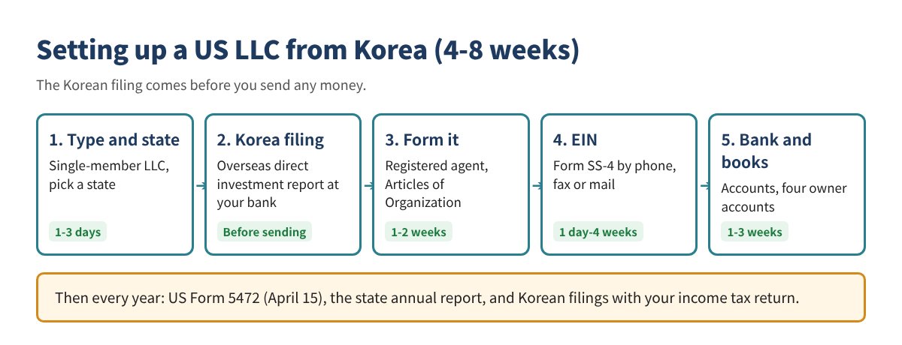
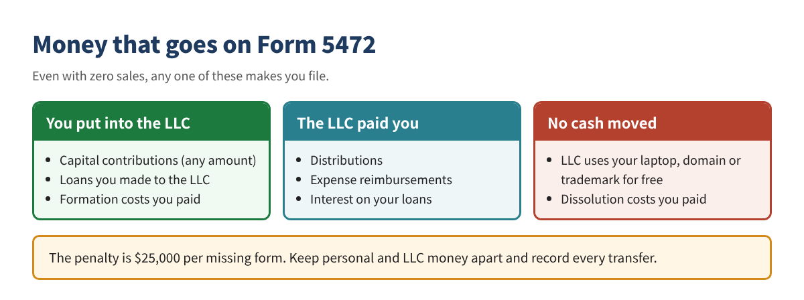
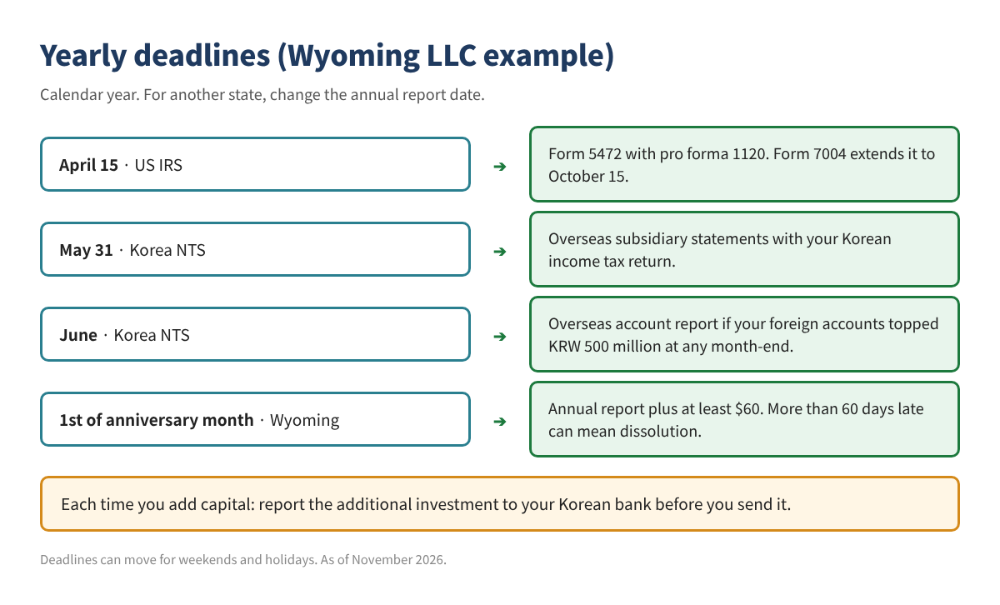

Forming a US LLC as a Korean Nonresident: The Two Filings That Matter More Than Setup
You can form a US LLC from Korea without ever visiting the US. The real risk comes after formation: the US penalty for a missing Form 5472 and the Korean fine for not reporting an overseas direct investment. These are the two things nonresidents miss most.
Who this is for: Korean residents without an SSN or green card who want a US LLC: online sellers, freelancers, SaaS and consulting businesses that sell to US customers.

1. Is an LLC right for you?
If you sell to US customers and need US payment tools such as Stripe or Amazon, a single-member LLC is the usual starting point. If the goal is "to pay less tax," think again: Korean residents are taxed in Korea on worldwide income.
| Single-member LLC | Multi-member LLC | C-Corp | |
|---|---|---|---|
| US tax default | Disregarded entity | Partnership | Corporation |
| Yearly federal filing | Form 5472 + pro forma 1120 | Form 1065 + K-1 (+ withholding forms) | Form 1120 (+ 5472) |
| Best for | Solo online business, freelancer | Partners | Raising investment |
| Complexity | Low | High | Medium-high |
- A nonresident single-member LLC with no US work or US office often owes no US federal income tax. It depends on the business, so confirm with a tax professional.
- Nonresident aliens cannot own S-Corp shares. S-Corp tax tips on US blogs don't apply.
- An LLC does not come with a visa. Working in the US yourself needs a separate visa.
2. Which state?
For a nonresident single-member LLC with no US office, Wyoming is a sensible default for cost and upkeep. Consider Delaware if investors or court predictability matter. If you have a real office or staff in some state, you may have to register there.
| State | Formation fee | Yearly state cost (min.) | Due | Notes |
|---|---|---|---|---|
| Wyoming | $100 | $60 | First day of formation month | No state income tax. 60+ days late can mean dissolution |
| New Mexico | $50 | $0 (no annual report) | None | Cheapest; less familiar to banks |
| Delaware | $110 | $400 (from tax year 2026; $300 before) | June 1 | Familiar to investors and courts; most expensive |
| Nevada | $425 | $350 | End of formation month | No state income tax; $75 late fee |
Registered agent fees (usually $100-300 a year) are extra. Sources differ on whether Delaware's annual tax is $400 or $300, so check the state site before paying. The federal Form 5472 duty is the same in every state.
3. Registered agent and formation
A nonresident must appoint a registered agent with a physical address in the state. The agent receives court papers and state notices for you.
- Check the name on the Secretary of State site. End it with "LLC".
- Sign with a registered agent. Check that mail scanning and annual report reminders are included.
- Business address: banks and payment processors often refuse PO boxes.
- File the Articles of Organization (Certificate of Formation in some states) online. No SSN needed.
- Write an Operating Agreement. Most states don't ask for it, but banks often do. Make one even for a single-member LLC.
No BOI report needed. A FinCEN final rule in August 2026 permanently exempts entities formed in the US from beneficial ownership reporting. A Wyoming LLC owned by a Korean resident is a US entity, so it is exempt. Avoid services that charge for BOI filing.
4. Getting an EIN without an SSN
You can get an EIN for free without an SSN or ITIN. You can't use the IRS online application, though; you file Form SS-4 by phone, fax or mail.
| Method | Contact | Time | Notes |
|---|---|---|---|
| Phone | +1-267-941-1099 (not toll-free), Mon-Fri 6 a.m.-11 p.m. Eastern | Issued on the call | 8 p.m.-1 p.m. next day in Korea (one hour earlier during US daylight time) |
| Fax | +1-304-707-9471 (outside the US) | About 4 business days | Needs a return fax number (online fax works) |
| IRS international unit, Cincinnati | 4+ weeks | Last resort |
- Use the December 2025 revision of Form SS-4.
- Line 7b (SSN/ITIN): write "Foreign".
- Legal name: exactly as registered with the state.
- Entity type: for a single-member LLC, check "Other" and write "Foreign-owned U.S. disregarded entity". Confirm with your tax professional.
- Only one EIN per responsible party per day.
- Keep the CP 575 notice. If you lose it, call for a 147C letter.
Watch out: the IRS charges nothing for an EIN. Avoid sites that charge an "IRS filing fee."
5. US bank and payment accounts
For nonresidents, the realistic route is a fintech business account you can open remotely. Most traditional banks want you in person. Which providers accept nonresidents changes often, so check eligibility first.
- ☐ State-approved formation documents
- ☐ EIN letter (CP 575 or 147C)
- ☐ Operating Agreement
- ☐ Passport
- ☐ Proof of Korean address (an English bank statement, for example)
- ☐ Business description and website
Describe the business concretely: who you sell to, what, and how. Vague answers get applications declined. With a US LLC and EIN you can sign up for US payment processors like Stripe, which is the real reason many Korean sellers form an LLC.
6. US duty: Form 5472 every year
A foreign-owned single-member LLC must file Form 5472 attached to a pro forma Form 1120 by April 15 each year, even with zero sales. Missing it costs $25,000 per form.
| Item | Details |
|---|---|
| Who | Foreign-owned single-member LLCs (tax years from 2017) |
| Due | April 15 of the next year; Form 7004 on time extends to October 15 |
| How | No e-filing. Fax or mail to the IRS unit named in that year's instructions |
| Pro forma 1120 | Name, address and EIN only, marked as filed for Form 5472 |
| Penalty | $25,000 per form, more if ignored after IRS notice |
| Records | Books, transfer records, contracts |

So the best protection is to keep personal and LLC money apart and record every transfer. US companies that pay you will ask for Form W-8BEN; the US-Korea tax treaty can lower withholding in some cases. If you add US staff, a warehouse or an office, federal income tax or state sales tax may apply, so talk to a US tax professional.
7. Korean duty: report the investment before sending money
The Korean side is missed even more often. A Korean resident who sets up a foreign company must report the overseas direct investment to a Korean foreign exchange bank before sending even one dollar. In a recent Financial Supervisory Service count, overseas direct investment made up 44.6% of 1,072 foreign exchange violations, the largest share.
| When | What | Where |
|---|---|---|
| Before sending | Overseas direct investment report (10%+ ownership; a single-member LLC is 100%) | One designated foreign exchange bank |
| After sending | Remittance and share acquisition reports | Same bank |
| Adding capital | Additional investment report | Same bank |
| Every May | Overseas subsidiary statements with the income tax return | National Tax Service |
| Every year | Annual business report if total investment tops $3 million | Same bank |
| Every June | Overseas account report if foreign accounts topped KRW 500 million at any month-end | National Tax Service |
| On closing | Liquidation report | Same bank |
Missed it? Capital transactions without the report can bring fines under Korea's Foreign Exchange Transactions Act. Filing a late report with the bank as soon as you notice is the way to reduce the penalty.
- Korean residents are taxed in Korea on worldwide income. An LLC does not remove Korean filings.
- Korean tax law often treats a US disregarded LLC as a foreign corporation. Money you take out may then be treated as dividends, and retained profits may need review under the controlled foreign company rules.
- US tax paid can be partly credited in Korea to reduce double taxation.
- Settle how you will report in Korea with an international tax professional before you form the LLC.
8. Books and yearly deadlines
Form 5472 and the Korean filings both start from the record of money between you and the LLC, so set up the books before the first transfer. In QuickBooks Online, connect the LLC bank and payment accounts and create the four accounts below. Their totals are what you report on Form 5472.
| Account | Type | Meaning |
|---|---|---|
| Owner Contributions | Equity | Money you put in |
| Owner Distributions | Equity | Money you took out |
| Loan from Owner | Liability | Money you lent |
| Expenses Paid by Owner | Expense | Costs you paid for the LLC, including formation |

Common mistakes
- Skipping Form 5472 because there were no sales. A contribution alone makes you file.
- Sending money before the Korean investment report. Report at the bank first.
- Using LLC money for personal spending. It tangles the records and weakens liability protection.
- Paying for BOI filing. US-formed LLCs are exempt.
- Missing the annual report. Wyoming can dissolve an LLC more than 60 days late.
- Trying to elect S-Corp. Nonresident aliens can't be S-Corp shareholders.
Checklist
- ☐ Choose the entity (single-member LLC, multi-member, C-Corp)
- ☐ Choose the state
- ☐ Settle Korean reporting with a tax professional
- ☐ Sign a registered agent, file Articles, save the approved copy
- ☐ Write an Operating Agreement
- ☐ Get an EIN (SS-4) and keep the CP 575
- ☐ Report the investment to your Korean bank (before sending)
- ☐ Open a US business account, send capital, file remittance reports
- ☐ Set up the books (four owner accounts)
- ☐ Put the yearly deadlines on your calendar
This article is educational only and is not legal or tax advice. Fees and rules change often, so check official sites before you act. Confirm Korean tax treatment with an international tax professional. QuickBooks is a registered trademark of Intuit Inc.; not affiliated with or endorsed by Intuit.
Sources (checked November 2026): IRS, Instructions for Form SS-4 (Rev. 12-2025): https://www.irs.gov/instructions/iss4 · IRS, How to Apply for an EIN: https://irs.gov/node/17164 · SDO CPA, Form 5472 Guide: https://www.sdocpa.com/form-5472-foreign-owned-business-guide/ · Ballard Spahr, FinCEN permanently exempts US entities from BOI reporting: https://www.ballardspahr.com/insights/alerts-and-articles/2026/08/fincen-permanently-exempts-us-entities-and-persons-from-beneficial-ownership-reporting · Zenind, Wyoming LLC Fees 2026: https://www.zenind.com/en-US/help/post/wyoming-llc-fees-licenses-and-filing-requirements-2026-guide · LLC University, annual fees by state: https://www.llcuniversity.com/llc-annual-fees-by-state/ · eToday, overseas direct investment reporting: https://www.etoday.co.kr/news/view/1619152 · Asia Economy, 1,072 FX violations: https://view.asiae.co.kr/article/2026071414351120844 · Shin & Kim: https://shinkim.com/kor/media/newsletter/pdf/2998 · National Tax Service, overseas subsidiary filing: https://www.nts.go.kr/nts/na/ntt/selectNttInfo.do?nttSn=52246